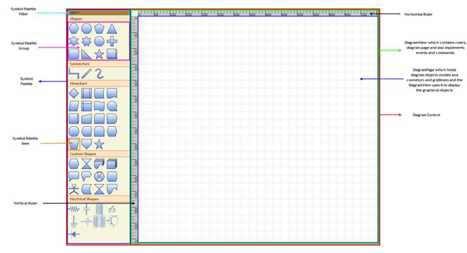

The following is a general description about the important classes of Diagram WPF. These classes form the base of the control.
Diagram Control
The Diagram control is the base class, which contains the
view and the model. It receives user input and translates it into actions and
commands on the model and view. It also implements SymbolPalette and scrolling,
and enables horizontal and vertical scrollbars when the size of the view exceeds
the size of the window.
Diagram Model
A model represents data for an application and contains the logic for adding, accessing, and manipulating the data. Nodes and connectors are added to the Diagram Control using the Model property. A predefined layout can be applied using the LayoutType property of the DiagramModel, or the position of the nodes can be manually specified.
Diagram
View
The view obtains data from the model and presents them to the
user. It typically manages the overall layout of the data obtained from the
model.
Apart from presenting the data, view also handles navigation
between the items, and some aspects of item selection. The views also implements
basic user interface features, such as rulers, and drag-and-drop. It handles the
events, which occur on the objects, obtained from the model. Command mechanism
is also implemented by the view.
A view can be constructed without a
model, but a model must be provided before it can display useful information.
Views can also render additional visual information that do not exist inside the
model such as bounding boxes and grids. These additional view-specific objects
are referred to as decorators, because they provide additional visual aids and
window dressing to the view; but they are not actually a part of the model.
Diagram Page
The DiagramPage is just a container to hold the objects(nodes and connectors) added through the model. The DiagramView uses the page to display the diagram objects. As mentioned before, the view implements several basic user interface features like rulers, grids, events and commands. So therefore page is just a container to hold the graphical objects added through the model and the DiagramView uses it to display the objects.
SymbolPalette
The SymbolPalette control displays node shapes and allows a user to drag and drop symbols onto diagrams. It supports grouping and filtering symbols. It allows users to classify items as groups, so they can be navigated easily. Also, custom shapes can be added to the SymbolPalette.
SymbolPaletteGroup
A SymbolPalette group is a collection of SymbolPalette items. It is used to group the items in the SymbolPalette control based on classifications provided. The SymbolPalette group can be added to the SymbolPalette using the SymbolGroups property.
SymbolPaletteFilter
A SymbolPalette filter can be added to the SymbolPalette control, using the SymbolFilters property, so that only desired SymbolPalette groups get displayed.
SymbolPaletteItem
SymbolPalette items are contained in the SymbolPalette group. A SymbolPalette item does not restrict users to the type of content that can be added to it. A SymbolPalette item can be a text box, combo box, image, button, and so on.
Horizontal / Vertical Ruler
Rulers display the coordinates of elements on the diagram page. Negative label values get displayed on the ruler in case the page is panned to the right side. On Zooming, the ruler values get adjusted accordingly, to match with the current Zoom level. At any point, the ruler value always indicates the exact coordinates of the page and its elements. So when the page is zoomed, the interval values get halved or doubled depending upon the zoom level.

Figure 10: Diagram Page Illustrated